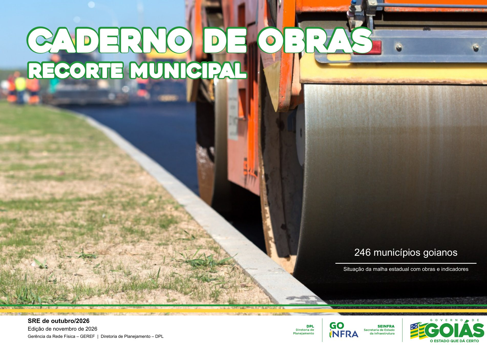

Acessar o atlas ›
SISTEMA RODOVIÁRIO ESTADUAL – SRE
…
/GO
‹
›
＋ Combinar municípios
Capa
🌙 Tema escuro
SITUAÇÃO ATUAL – RODOVIAS DO SRE
OBRAS E PROJETOS
NOTAS METODOLÓGICAS
LEGENDA
INDICADORES DO SRE –
/GO
COMPARAÇÃO ENTRE OS MUNICÍPIOS SELECIONADOS
SRE – QUADRO DE TRECHOS
Carregando o atlas…